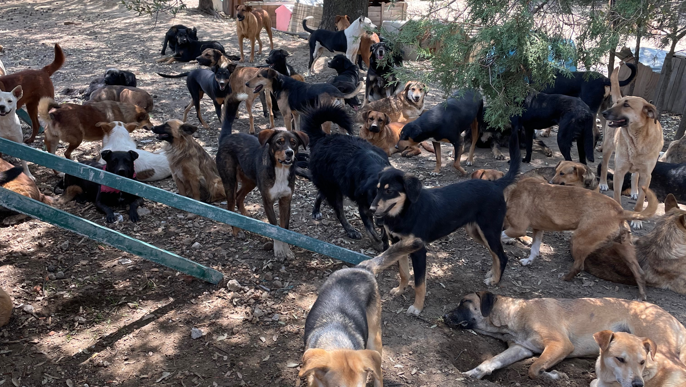

Programa Aula, Escuela y Comunidad (PAEC)
Huellitas Comunitarias es una iniciativa escolar que busca llevar el aprendizaje del aula directamente a nuestra comunidad. Nuestro propósito principal es promover la adopción responsable de animales en situación de calle y gestionar donaciones para refugios locales.
Nuestros Objetivos:
- Visibilizar a perros y gatos sin hogar listos para ser adoptados.
- Crear centros de acopio en la escuela para alimento y cobijas.
- Fomentar el respeto y cuidado de los animales en nuestro entorno.